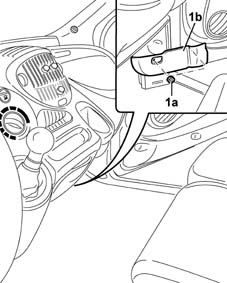
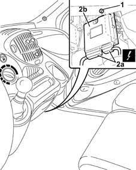

1057B80 gpl injection system control unit r r
- Path
- Procedures > 10 ENGINE UNIT > 1057 LPG FUEL SYSTEM. > 1057B gpl multipoint injection fuel system > 1057B80 gpl injection system control unit r r
- Kind
- repair procedure (removal / refitting; the operation number is the code)
- Applies to
- engines: 1.6 16v; all production periods; only with equipment: GPOWER
- Interactive page
- https://sloeber94.github.io/elrnDB-fMltpl/en/#/2891516
Applies to: engines: 1.6 16v; all production periods; only with equipment: GPOWER and Euro 3
 Removing
Removing
 Refitting
RefittingDisconnect the battery negative terminal.
1. Undo the nut (1a) and remove the protective cover (1b).

Applies to: engines: 1.6 16v; all production periods; only with equipment: GPOWER and Euro 3
1. Undo the control unit retaining nuts.
2. Disconnect electrical connections (2a) and remove control unit (2b).
 | Name | Connector |
|---|---|---|
2a | GPL control unit |

Applies to: engines: 1.6 16v; all production periods; only with equipment: GPOWER and Euro 3
Refitting
RemovingConnect the control unit electrical connections.
| Name | Connector |
|---|---|---|
- | GPL control unit |
Position the control unit and secure it using the nuts.
Fit the control unit protective cover and fix it using the nuts.
Connect the battery negative terminal.